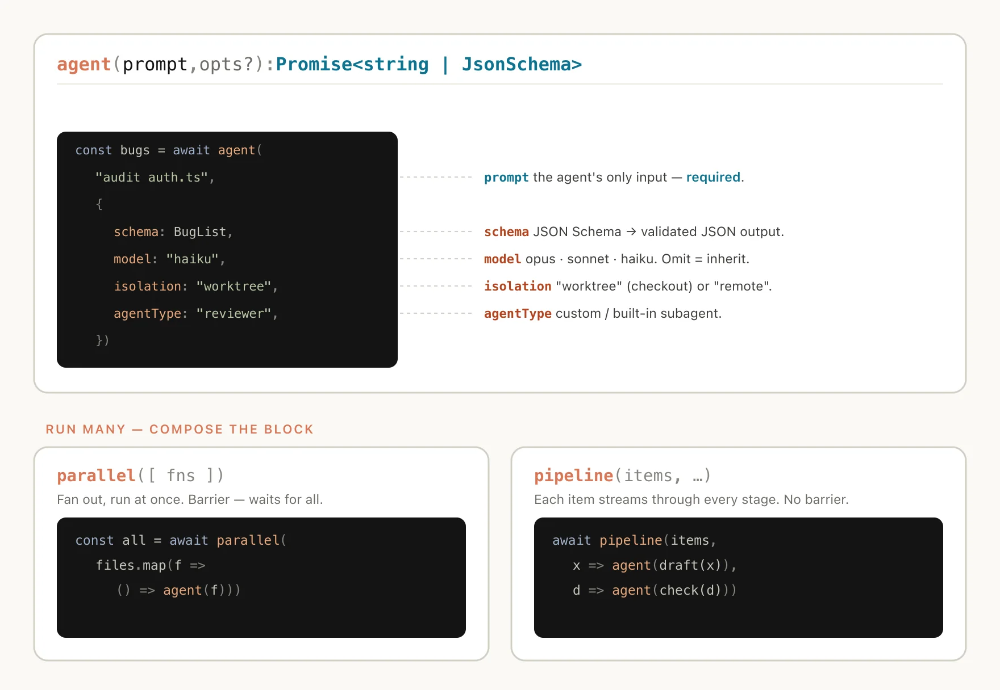
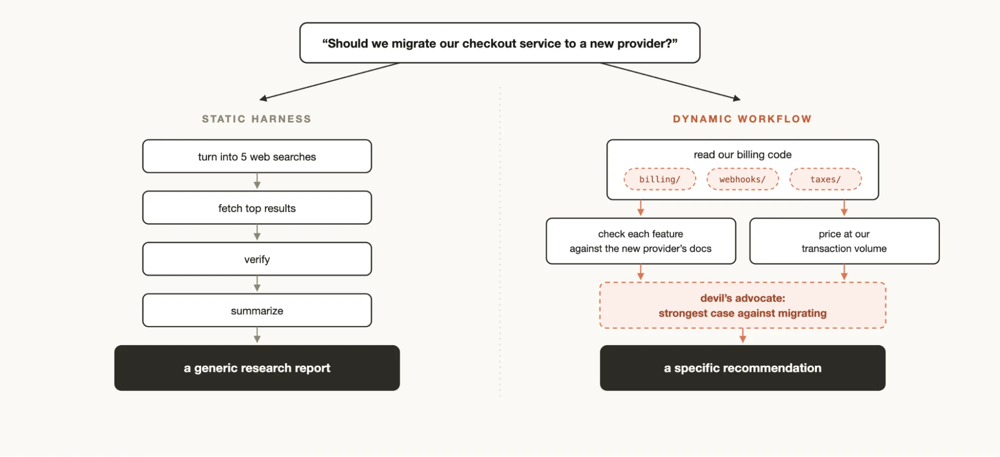
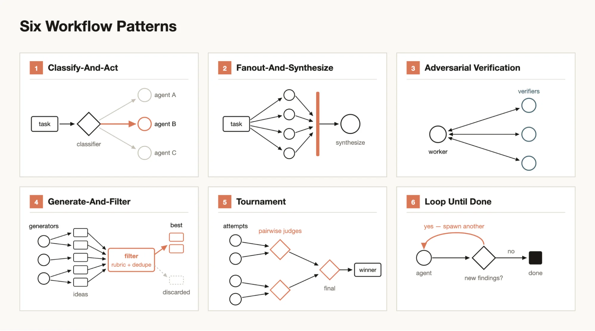
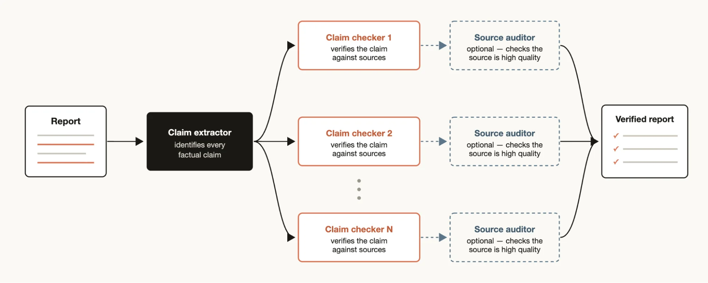
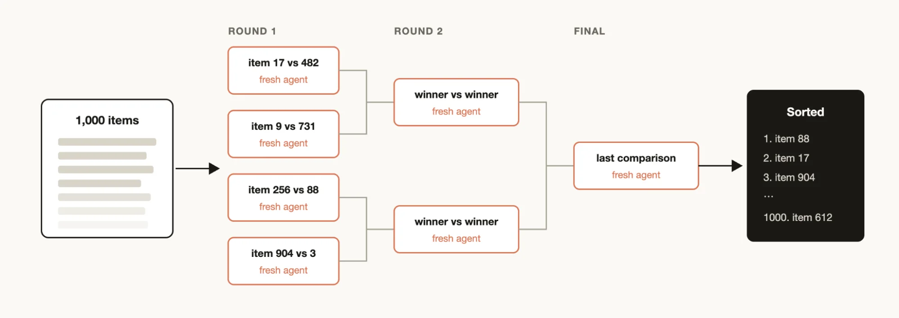
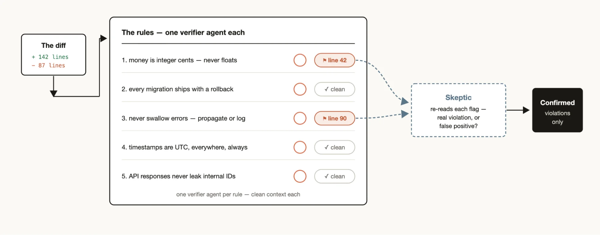
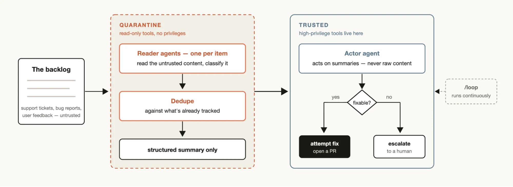
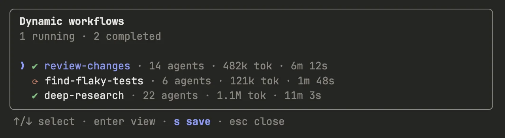
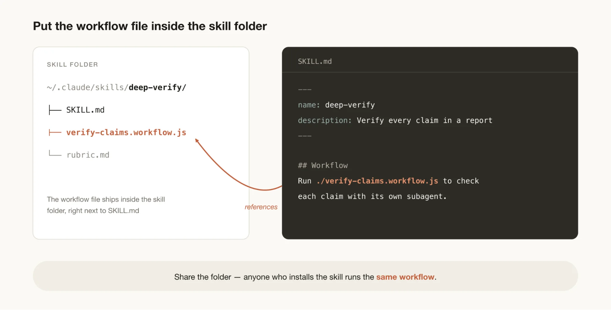

claude.dev · Agents（作者 Thariq Shihipar、Sid Bidasaria） · 2026-06-02
A harness for every task: dynamic workflows in Claude Code为每个任务现搭一套运行框架：Claude Code 的动态工作流
60 秒速览：这篇文章在说什么
译者所加，不是原文的一部分 —— 读完这 4 条，再看原文会快很多。
- 一句话结论：与其让 Claude 在同一个上下文窗口里既计划又执行，不如让它写一段脚本，把活分给一群上下文独立、目标聚焦的子智能体。这段脚本就是「动态工作流」。
- 它解决什么：长任务会露出三种失败模式——智能体性怠工（50 项只做 35 项就宣布完成）、自我偏好偏差（偏爱自己的结论）、目标漂移（多轮后忘了初衷，压缩之后尤甚）。工作流从结构上避开它们。
- 怎么用：直接让 Claude 建一个工作流，或在提示词里加触发词
ultracode。脚本里只有三块积木：agent()派一个子智能体，parallel()并行，pipeline()串流；Claude 还会替每个智能体挑模型、决定是否隔离到独立 worktree。 - 代价：更费 token，而且不是每个任务都需要。作者的判断标准很朴素——「这个常规编码任务，真的需要更多算力吗？」
静态工作流（Agent SDK / claude -p）
- 先写好流程，再让 Claude 走
- 要覆盖所有边界情况，所以必须通用
- 同一个问题，产出一份通用研究报告
- 并行度、模型、隔离方式都写死在流程里
动态工作流（本文）
- Claude 按眼前任务现场写流程
- 只为这一个任务服务，可以很专用
- 同一个问题，产出一份具体建议
- 每个子智能体的模型与 worktree 隔离由 Claude 决定
对照表是译者按原文（尤其第四节与 FIG B）整理，不是原文自带的表格。
读法建议：想马上用，读第一节的八条示例提示词加第五节六种模式；想知道原理，读第二、三节；想抄工程细节，直接跳到第八节的四条建议。
Claude Code can now write and orchestrate its own multi-agent harness on the fly. Here's how dynamic workflows work, and the patterns that get the most out of them.
Claude Code 现在可以临场写出并调度自己的多智能体运行框架。下面讲动态工作流怎么运作，以及最能发挥它的几种模式。
Last week, we released dynamic workflows in Claude Code. Claude can now write its own harness on the fly, custom-built for the task at hand. While the default Claude Code harness is built for coding, it is also useful for many other types of tasks because, as it turns out, many tasks resemble coding tasks. But there are certain classes of tasks where we have had to build custom harnesses on top of Claude Code to achieve peak performance such as Research, security analysis, agent teams, or Code Review. Workflows allow you to dynamically create harnesses built on top of Claude Code that enable Claude to solve all of those problems more natively. You can also share and reuse these workflows with others. In this article, I’ll cover my initial workflows experiences and learnings so you can best take full advantage. Keep in mind, best practices are still developing: dynamic workflows often use more tokens and are best suited for complex, high value tasks.
上周我们在 Claude Code 里发布了动态工作流（dynamic workflows）。Claude 现在能按眼前的任务，临场写一套专属的运行框架（harness）。默认的 Claude Code 运行框架是为写代码打造的，但它对很多其他类型的任务同样好用——因为事实证明，很多任务本来就长得像编码任务。但有几类任务，我们必须在 Claude Code 之上自建运行框架才能达到最佳效果，比如研究、安全分析、智能体团队，或代码审查。工作流让你能在 Claude Code 之上动态创建运行框架，让 Claude 更原生地解决这些问题。你还可以把这些工作流分享给别人、重复使用。本文会讲我最初使用工作流的经验和心得，帮你把它用到最充分。先提醒一句：最佳实践还在形成中——动态工作流往往更费 token，最适合复杂、高价值的任务。
Example prompts示例提示词
先看八条能直接照抄的提示词。它们覆盖了复现偶发失败、翻历史会话找纠正、跨系统挖根因、多视角拆方案、批量排序加复核、以及把草稿逐条核对代码库——共同点是「一个提示词就能让 Claude 自己搭出结构」。
Before diving into the technical details, I’d like to start with several example prompts to get you thinking about the possibilities with workflows:
进入技术细节之前，先给你几条示例提示词，让你感受一下工作流能做什么：
“This test fails maybe 1 in 50 runs. Set up a workflow to reproduce it. Form competing theories about the race, and don't stop until one theory survives the evidence.“
「这个测试大概跑 50 次会失败 1 次。搭一个工作流把它复现出来。对这场竞态提出几个互相竞争的理论，直到有一个理论扛住了所有证据。」
“Using a workflow, go through my last 50 sessions and mine them for corrections I keep making and turn the recurring ones into `CLAUDE.md` rules”
「用工作流翻我最近 50 次会话，挖出我反复在纠正的那些点，把反复出现的部分写成 `CLAUDE.md` 规则」
“Use a workflow to dig through #incidents in Slack for the past six months and find recurring root causes where nobody has filed a ticket.“
「用工作流翻 Slack 里 #incidents 频道最近半年的记录，找出反复出现、却没人建单的根因。」
“Take my business plan and run a workflow where different agents tear it apart from an investor's, a customer's, and a competitor's perspective.”
「拿我的商业计划书跑一个工作流，让不同智能体分别从投资人、客户、竞争对手的角度把它拆一遍。」
“Here's a folder of 80 resumes, use a workflow to rank them for the backend role and double-check the top ten. Interview me using the AskUserQuestion tool for a rubric.“
「这是一个装了 80 份简历的文件夹，用工作流给后端岗位排序，再把前十名复核一遍。用 AskUserQuestion 工具采访我，得出一套评分标准。」
“I need a name for this CLI tool. Use a workflow to brainstorm a bunch of options and run a tournament to pick the top 3.“
「我要给这个命令行工具起个名字。用工作流先脑暴一堆候选，再跑一场锦标赛选出前三个。」
“Use a workflow to rename our User model to Account everywhere.”
「用工作流把我们的 User 模型在所有地方重命名为 Account。」
“Go through my blog post draft and verify every technical claim against the codebase using a workflow, I don't want to ship anything wrong.“
「用工作流把我博客草稿里每一条技术论断都对着代码库验证一遍，我不想发布任何错误的东西。」
How dynamic workflows work动态工作流怎么运作
动态工作流就是一个 JavaScript 文件，里面的 agent() 派生单个子智能体，parallel() 与 pipeline() 把调用组合起来；它还能替每个智能体挑模型、决定是否隔离到独立 worktree，被打断后可以续跑。
Dynamic workflows execute a javascript file with a few special functions that help spawn and coordinate subagents:
动态工作流执行的是一个 JavaScript 文件，其中有几个特殊函数，用来派生和协调子智能体：

三块积木：agent / parallel / pipeline 工作流脚本只有三块基本积木：agent() 派生一个子智能体，parallel() 与 pipeline() 把多个调用组合起来。上半部分写的是 agent(prompt, opts) 的选项：prompt 是唯一必填输入，schema 让它返回校验过的 JSON，model 在 opus / sonnet / haiku 之间选，isolation 决定跑在 worktree 还是 remote，agentType 用来选某个子智能体。下半部分才是组合：parallel() 扇出并等全部结束，pipeline() 逐项往下走。
原文图注：FIG A The three building blocks of a workflow script: agent() spawns one subagent; parallel() and pipeline() compose many.
这张图怎么看（0 条）
Dynamic workflows also include standard JavaScript functions like JSON, Math, and Array, to help process data. It’s particularly useful to know that dynamic workflows can decide which models an agent uses and whether subagents are run in their own worktree, allowing Claude to choose the intelligence level and isolation needed. If a workflow is interrupted, for example by user action or quitting the terminal, resuming the session will allow the workflow to pick up where it left off.
动态工作流里也能用标准 JavaScript 函数，比如 JSON、Math 和 Array，用来处理数据。值得特别知道的一点：动态工作流可以决定每个智能体用哪个模型，以及子智能体是否各自跑在独立的 worktree 里——让 Claude 自己选所需的智能水平和隔离程度。如果工作流被打断（比如用户操作或关掉终端），恢复会话后工作流会从断点继续。
Why dynamic workflows为什么要动态工作流
默认运行框架要求「计划」和「执行」挤在同一个上下文窗口里，长任务就会露出三种失败模式：智能体性怠工、自我偏好偏差、目标漂移。工作流把工作拆给上下文独立、目标聚焦的子智能体，从结构上避开它们。
When you ask the default Claude Code harness to do a task, it needs to both plan and execute in the same context window. For many coding tasks, this is highly effective, but it can break down over long-running, massively parallel, highly structured and/or adversarial tasks.
当你把任务交给默认的 Claude Code 运行框架时，它得在同一个上下文窗口里既做计划又做执行。对很多编码任务，这非常有效；但碰上长时间运行、大规模并行、高度结构化或对抗性的任务，就会撑不住。
This is because the longer Claude works on a complex task in a single context window, the more it becomes susceptible to a few specific failure modes:
原因是：Claude 在单个上下文窗口里干复杂任务干得越久，就越容易落入几种特定的失败模式：
- Agentic laziness refers to when Claude stops before finishing a particularly complex, multi-part task and declares the job done after partial progress, for example addressing 35 of the 50 items in a security review.
- Self-preferential bias refers to Claude’s tendency to prefer its own results or findings, especially when asked to verify or judge them against a rubric.
- Goal drift refers to the gradual loss of fidelity to the original objective across many turns, especially after compaction. Each summarization step is lossy, and details like edge-case requirements or “don't do X” constraints can get lost.
- 智能体性怠工（agentic laziness）：Claude 在一项特别复杂、由多部分组成的任务上，做到一半就宣布完成，比如安全审查 50 项只处理了 35 项。
- 自我偏好偏差（self-preferential bias）：Claude 倾向于偏爱自己的结果或发现，尤其是被要求按评分标准验证或评判自己时。
- 目标漂移（goal drift）：在许多轮之后逐渐偏离最初的目标，压缩（compaction）之后尤其明显。每一次摘要都是有损的，边界情况的要求、以及「不要做 X」这类约束，很容易在过程中丢掉。
Creating a workflow helps combat these by orchestrating separate Claude subagents with their own context windows and focused, isolated goals.
建一个工作流能对抗这些：它调度多个各自拥有独立上下文窗口、目标聚焦且隔离的 Claude 子智能体。
Dynamic vs static workflows动态与静态工作流的区别
静态工作流（Agent SDK、claude -p）必须覆盖所有边界情况，所以趋于通用；动态工作流则是 Claude 现写一套只为眼前任务服务的运行框架。两者的差别就是「通用研究报告」和「具体建议」的差别。
You may have previously created a static workflow using the Claude Agent SDK or `claude -p` to coordinate multiple instances of Claude Code together. But because static workflows need to work for all edge cases, they are usually more generic. With Claude Opus 4.8 and dynamic workflows, Claude is now intelligent enough to write a custom harness tailor-made for your use case.
你以前可能用 Claude Agent SDK 或 `claude -p` 建过静态工作流，把多个 Claude Code 实例协调起来。但静态工作流得覆盖所有边界情况，所以通常更通用。有了 Claude Opus 4.8 和动态工作流，Claude 现在聪明到能为你的具体场景现写一套量身定制的运行框架。

静态运行框架 vs 动态工作流 同一个问题「我们的结账服务要不要换供应商？」，两种处理方式。左边 STATIC HARNESS：跑五次网络搜索、抓结果、验证、汇总，产出一份通用的研究报告（generic research report）。右边 DYNAMIC WORKFLOW：先去读账单代码，再把每个功能对着新供应商的文档逐条查，最后给出一份具体建议（a specific recommendation）。
原文图注：FIG B A static harness runs the same steps for every question; a dynamic workflow is shaped to the one in front of it.
这张图怎么看（0 条）
Helpful patterns when using dynamic workflows值得组合的六种模式
分类再行动、扇出再汇总、对抗性验证、生成再筛选、锦标赛、循环到完成——这六种模式可以单独用，也可以拼在一起。理解它们是为了在提示词里给出方向，而不是背术语。
You can start using dynamic workflows just by asking Claude to make one, or by using the trigger word “`ultracode`” to ensure that Claude Code creates a workflow. But building a mental model for how dynamic workflows work will help you understand when to use them and how you might nudge Claude via prompts. There are a few common patterns that Claude might use and compose together when building workflows:
你只要让 Claude 做一个工作流就能用上动态工作流，也可以用触发词「`ultracode`」确保 Claude Code 一定会建工作流。但先在脑子里建立「动态工作流怎么运作」的模型，能帮你判断何时该用它、以及怎么通过提示词去引导 Claude。Claude 在搭工作流时会用到、并把它们组合起来的常见模式有这么几种：

六种可组合的工作流模式 六宫格，每格一个模式：Classify-And-Act（先分类再行动）、Fanout-And-Synthesize（扇出再汇总）、Adversarial Verification（对抗性验证）、Generate-And-Filter（生成再筛选）、Tournament（锦标赛）、Loop Until Done（循环到完成为止）。标题就是模式名，格子里是极简示意。
原文图注：FIG C Six workflow patterns Claude composes from.
这张图怎么看（0 条）
Classify-and-act分类再行动
Use a classifier agent to decide on the type of task, and then route to different agents or behavior based on the task. Or, use a classifier at the end to determine output.
用一个分类器智能体判断任务类型，再按类型把任务路由到不同的智能体或行为。也可以在最后用一个分类器来决定输出。
Fan-out-and-synthesize扇出再汇总
Split up a task into many smaller steps, run an agent on each step and then synthesize those results. This is particularly useful for when there are a large number of smaller steps, or when each step benefits from its own clean context window so they don't interfere or cross-contaminate. The synthesize step is a barrier—it waits for all the fan-out agents, then merges their structured outputs into one result.
把任务拆成许多更小的步骤，每一步跑一个智能体，然后把结果汇总。当步骤数量很多，或者每一步都受益于自己干净的上下文窗口（互不干扰、不交叉污染）时，这特别有用。汇总这一步是个屏障——它等所有扇出智能体结束，再把它们各自的结构化输出合并成一个结果。
Adversarial verification对抗性验证
For each spawned agent, run a separate spawned agent to adversarially verify its output against a rubric or criteria.
为每个派生出来的智能体，再派一个独立智能体，按评分标准或判据对抗性地验证它的输出。
Generate-and-filter生成再筛选
Generate a number of ideas on a topic and then filter them by a rubric or by verification, dedupe duplicates and return only the highest quality, tested ideas.
就一个题目生成一批想法，再按评分标准或验证结果筛掉，去重，只留下质量最高、经过检验的想法。
Tournament锦标赛
Instead of dividing the work, have agents compete on it. Spawn N agents that each attempt the same task using different approaches. Prompts or models then judge the results in a pairwise fashion using a judging agent until you have a winner.
不划分工作，而是让智能体在同一件事上竞争。派生 N 个智能体，每个用不同方法做同一项任务。再由提示词或模型以两两对比的方式评判结果，直到决出胜者。
Loop until done循环到完成
For tasks with an unknown amount of work, loop spawning agents until a stop condition is met (no new findings, or no more errors in the logs) instead of a fixed number of passes.
对于工作量未知的任务，循环派生智能体，直到满足停止条件（没有新发现，或日志里不再有错误），而不是跑固定轮数。
Use cases能用在什么地方
作者给了十类场景：大规模迁移、深度研究、深度验证、排序、规则遵循、根因排查、大规模分诊、探索与品味、评测、模型路由。每一类都写清了「拆成什么单位、派多少智能体、怎么合并」。
Think creatively of when and how to ask Claude Code to make dynamic workflows. I’ve found that workflows are sometimes even more useful for non-technical work.
想清楚何时、以及怎样让 Claude Code 去搭动态工作流，这需要一点想象力。我发现工作流有时对非技术工作更有用。
Migrations and refactors迁移与重构
Bun was rewritten from Zig to Rust using workflows. You can read more about how that was done in Jarred’s thread or see how we run AI code migrations across million-line codebases. The key is to break down the task into a series of steps that need to be operated on for example callsites, failing tests, modules, etc. Spin off a subagent for every fix in a worktree to make the fix, then have another agent adversarially review, and merge them. Consider telling the agent not to use resource intensive commands so that you can maximally parallelize without running out of resources on your machine.
Bun 就是从 Zig 迁到 Rust 时用工作流完成的。具体怎么做的，可以看 Jarred 的帖子，或看我们怎么在百万行级代码库上做 AI 代码迁移。关键在于把任务拆成一串要处理的单位，比如调用点、失败的测试、模块等等。为每一处修复派生一个子智能体，在各自的 worktree 里改完，再由另一个智能体对抗性审查，最后合并。可以考虑告诉智能体别用吃资源的命令，这样你就能最大限度并行，而不会把本机资源用光。
Deep research深度研究
We published a deep research skill (`/deep-research`) inside Claude Code that uses dynamic workflows. Specifically, it fans-out web searches, fetches sources, adversarially verifies their claims, and synthesizes a cited report. But you may do this sort of research for more than just web searches. For example, asking Claude to compile a status report from context in Slack or to research how a feature works by exploring a codebase in-depth.
我们在 Claude Code 里发布了一个深度研究技能（`/deep-research`），用的就是动态工作流。具体说，它扇出网络搜索、抓取来源、对每一条论断做对抗性验证，最后汇总成一份带引用的报告。但这种研究不只是网络搜索。比如让 Claude 从 Slack 里的上下文汇编一份状态报告，或深入探索代码库，弄清某个功能是怎么实现的。
Deep verification深度验证

深度验证：每条论断一个检查者 一份报告（Report）先进 Claim extractor，被拆成若干条论断，再扇出到 Claim checker 1..N；每个检查者后面可选挂一个 Source auditor 核实来源，最后汇成 Verified report。
原文图注：FIG D Deep verification: one checker agent per factual claim, with an optional source auditor behind each.
这张图怎么看（0 条）
On the other hand, if you have a report where you want to check and source every factual claim that it references you may want to generate a workflow which has one agent identify all of the factual claims and then spin off a subagent to check each one in-detail. You could also have a verification agent check the source subagent to make sure its source is high quality.
反过来，如果你有一份报告，想逐条核对并标注它引用的每一个事实论断，你可能会想要一个工作流：让一个智能体找出所有事实论断，再为每一条派生一个子智能体去做细致核查。你还可以再配一个核查智能体去检查负责找来源的子智能体，确认它的来源质量足够高。
Sorting排序

锦标赛排序：1,000 条怎么排 1,000 条条目进入对阵图：第一轮两两配对，<i>每次比较都用一个全新的智能体</i>；胜者进第二轮、再比、最后一决胜负，输出是排好序的列表（Sorted）。关键是没有任何一个上下文需要装下全部 1,000 条。
原文图注：FIG E A tournament sort: every comparison gets a fresh agent, so no single context has to hold all 1,000 items.
这张图怎么看（0 条）
You may have a list of items that you want to sort by some qualitative measurement that you believe that Claude Code is good at evaluating, for example: support tickets sorted by severity of the bug. But if you try to sort 1000+ rows in one prompt, quality degrades and it won't fit in context. Instead run a tournament, a pipeline of pairwise-comparison agents (comparative judgment is more reliable than absolute scoring), or bucket-rank in parallel then merge. Each comparison is its own agent, so the deterministic loop holds the bracket and only the running order stays in context.
你可能有一堆条目，想按某些你认为 Claude Code 擅长评估的定性指标排序，比如：按 bug 的严重程度给支持工单排序。但如果你试图在一次提示里排 1000 行以上，质量会下降，而且根本放不进上下文。更好的做法是跑一场锦标赛——一串两两比较的智能体（比较判断比绝对打分更可靠）；或者并行做分桶排序，再合并。每次比较都是它自己的智能体，确定性的循环只负责维护对阵表，上下文里只留当前的对局。
Memory and rule adherence记忆与规则遵循

按规则逐条审查，再由怀疑者复核 左边是一份 diff：+142 行、−87 行。中间是五条规则，<i>一条规则一个验证智能体</i>；其中两条在 line 42 和 line 90 上标了红，其余回来说干净。右边是一个 skeptic（怀疑者）智能体，逐条重读这些标记，把真违规和误报分开，最后只剩 Confirmed violations。
原文图注：FIG F Rule-by-rule review: one verifier per rule in a clean context, then a skeptic filters the flags.
这张图怎么看（0 条）
If you have a particular set of rules that you find Claude misses or struggles with, even when put into the `CLAUDE.mds`, create a workflow with a list of rules that must be checked by verifier agents—one verifier per rule. Creating a skeptic persona subagent to review the rules to make sure they are in line will help avoid too many false positives. The reverse direction works too: mine your recent sessions and code review comments for corrections you keep making, cluster them with parallel agents, adversarially verify each candidate (would this rule have prevented a real mistake?), and then distill the survivors back into a `CLAUDE.md`.
如果你有一组特定规则，发现 Claude 老是漏、或者即便写进 `CLAUDE.md` 也做不好，那就建一个工作流，把规则列成清单，让验证智能体逐条检查——一条规则一个验证者。再建一个「怀疑者」人格的子智能体去复核这些规则是否站得住，能帮你避免太多误报。反方向也成立：翻你最近的会话和代码审查意见，挖出你反复在纠正的点，用并行智能体聚类，再对每个候选规则做对抗性验证（这条规则真能挡住一次真实的错误吗？），最后把活下来的写回 `CLAUDE.md`。
Root-cause investigation根因排查
Debugging works best when you come up with several independent hypotheses and test them, but if you’re only using one context window, Claude can run into self-preferential bias. A workflow can structurally prevent this by spinning up agents to generate hypotheses from disjoint evidence. For example, separate agents for logs, files, and data. Each hypothesis can then face a panel of verifiers and refuters. This isn't just for code. Workflows can be used for sales (why did sales drop in March?), data engineering (why did this pipeline fail?), or any post-mortem exercise.
调试最有效的做法，是想出几个互相独立的假设再分别验证；但如果你只有一个上下文窗口，Claude 容易陷进自我偏好偏差。工作流可以从结构上防止这一点：派生智能体，让它们从彼此不重叠的证据里各自提出假设。比如日志、文件、数据各派一个智能体。然后每个假设都要面对一组验证者和反驳者。这并不只适用于代码。工作流可以用在销售（三月销量为什么掉了？）、数据工程（这条管道为什么失败？），或任何复盘场合。
Triaging at scale大规模分诊

先隔离，再行动 左边 Quarantine zone（隔离区）：不可信的支持工单、bug 报告、用户反馈进来，里面只有只读工具；reader agents 负责分类、跟已跟踪项去重、只输出结构化摘要。右边 Trusted zone（可信区）：持有高权限工具的 actor agent 只看到这些摘要，据此采取动作。
原文图注：FIG G Quarantine, then act: reader agents touch untrusted content with no privileges; the actor agent only ever sees their summaries.
这张图怎么看（0 条）
Every team has a support queue, bug reports, or some other backlog that cannot be fully processed by humans. A triage workflow classifies each item, dedupes against what's already tracked, and takes action. This could mean attempting the fix or escalating to a human user. A useful pattern for triage workflows is quarantine. This involves barring the agents that read untrusted public content from taking high-privilege actions, which are instead done by the agents in charge of acting on the information. Pair triage workflows with /loop to have Claude do this continuously.
每个团队都有支持队列、bug 报告，或某些其他人力处理不完的积压。一个分诊工作流会给每个条目分类、跟已有记录去重，然后采取动作。这个动作可能是尝试修复，也可能是升级给人。分诊工作流有个好用的模式叫隔离（quarantine）。具体做法是不让读取不可信公开内容的智能体拥有高权限操作，那些操作交给专门负责依据信息行动的智能体去做。把分诊工作流和 /loop 搭配，就能让 Claude 持续做这件事。
Exploration and taste探索与品味
Workflows can be useful when exploring different approaches to a solution, especially when it is taste based, like design or naming, and would benefit from a rubric. Try asking Claude to explore a bunch of solutions, and give a review agent a rubric for what a good solution looks like. The task is complete when the review agent feels like it has met the criteria. Solutions can also be ordered or selected via a tournament based on the rubric.
探索同一个问题的不同解法时，工作流也有用，尤其当解法是品味问题（比如设计、命名），并且能受益于一套评分标准。可以试着让 Claude 探索一批解法，再给一个评审智能体一套「好解法长什么样」的评分标准。当评审智能体觉得满足了判据，任务就算完成。也可以按评分标准，通过锦标赛来排序或挑选解法。
Evals评测
You can run lightweight evals for particular tasks by spinning off separate agents in a worktree and then spinning off comparison agents to compare and grade the specific outputs against a rubric. For example, evaluating and then refining a skill you’ve created against a particular criteria.
你可以为特定任务跑轻量评测：在 worktree 里派生若干独立智能体，再派生比较智能体，按评分标准对比并给具体输出打分。比如，按某个特定判据评测并打磨你写的一个技能。
Model and intelligence routing模型与智能路由
Create a classifier agent tuned to your tasks that decides which model to use. This can be helpful when your task will involve many tool calls and conducting research prior to execution can identify the best model for the job. For example, the best model for the task “explain how the auth module works” depends on how many files in the auth module there are and the shape of the codebase. A classifier agent can do this research and then route to Sonnet or Opus based on the expected complexity of the task.
建一个针对你任务调好的分类器智能体，由它决定用哪个模型。当你的任务包含大量工具调用时，这个很有用：执行前先做一轮研究，能找出最合适的模型。比如「讲讲 auth 模块怎么工作」这个任务，最佳模型取决于 auth 模块里有多少文件、代码库长什么形状。分类器智能体可以先做这轮研究，再按任务预期的复杂度路由到 Sonnet 或 Opus。
When not to use dynamic workflows什么时候不该用
工作流是新东西，不是每个任务都需要它，而且往往明显更费 token。常规编码任务先问一句「真的需要更多算力吗」；同样的判断在架构层也成立——并行和专业化得先挣回协调成本。
Workflows are new. While there are many use cases where it will create outsized results, they are not needed for every task and may end up using significantly more tokens. It’s best to use workflows creatively to push Claude Code in ways that you haven’t previously. For regular coding tasks, try and ask yourself: does it really need more compute? For example, most traditional coding tasks do not need a panel of 5 reviewers. The same judgment applies one level up, at the architecture layer: the multi-agent vs single agent decision follows similar logic — parallelism and specialization have to earn their coordination cost.
工作流是新的东西。虽然有很多场景它能带来超额收益，但它并非每个任务都需要，而且可能显著多花 token。最好的用法是有创意地用工作流，把 Claude Code 推到以前推不到的地方。对常规编码任务，先问自己一句：它真的需要更多算力吗？比如大多数传统编码任务并不需要五个评审组成的评审团。同样的判断也适用于上一层，即架构层：多智能体与单智能体的取舍遵循相似的逻辑——并行和专业化，得先挣回它们的协调成本。
Tips for building dynamic workflows搭工作流的具体建议
四条实操：提示词要写细、可以配 /loop 与 /goal、能设 token 预算、能把运行存下来当技能分发。分发那条尤其值得看：把 JavaScript 文件放进技能目录，并在 SKILL.md 里当模板引用。
Prompting提示词怎么写
Detailed prompting, using the specific techniques we described above, for dynamic workflows creates the best results. Workflows are not just for large tasks. You can prompt the model to use a “quick workflow.” For example, you can create a quick adversarial review of an assumption.
用上面讲到的具体技巧，为动态工作流写细致的提示词，效果最好。工作流不只是为大任务准备的。你可以让模型跑一个「快速工作流」，比如对某个假设做一次快速的对抗性审查。
Combine with /goal and /loop和 /goal、/loop 搭配
When using workflows that can be repeated, for example triage, research, or verification, pair them with `/loop` to be run at regular intervals, and /goal to set a hard completion requirement.
对于那些可以重复的工作流，比如分诊、研究、验证，把它们和 `/loop` 搭配就能定期运行，再用 /goal 设一个硬性的完成条件。
Token usage budgetstoken 预算
You can set explicit token usage budgets for dynamic workflows to limit how many tokens a task uses. You can prompt it with a budget like: “use 10k tokens,” which will set the cap.
你可以给动态工作流设定明确的 token 预算，限制一项任务能花多少 token。可以在提示里直接给预算，比如「用 10k token」，它就会把这个上限设好。
Saving and sharing dynamic workflows保存与分享工作流
You can save workflows by pressing “s” in the workflow menu. You can check these into `~/.claude/workflows` or distribute them via a skill.
在工作流菜单里按「s」就能保存工作流。你可以把它们提交到 `~/.claude/workflows`，或通过技能分发出去。

Dynamic workflows 面板 Claude Code 里的 Dynamic workflows 面板列出三次运行：review-changes（14 个智能体、482k token、6m 12s）、find-flaky-tests（6 个智能体，仍在运行）、deep-research（22 个智能体、1.1M token、11m 3s）。底部是按键提示：select、enter view、s save、esc 退回。
原文图注：FIG H The dynamic workflows panel — press s to save a run as a reusable workflow.
这张图怎么看（0 条）
To share them via a skill, put your JavaScript workflow files in the skill folder and reference them in the `SKILL.md`. To allow for more flexibility, you may want to prompt Claude to think of the workflows in the skill as a template instead of a script that needs to be run verbatim.
通过技能分享的做法是：把 JavaScript 工作流文件放进技能目录，并在 `SKILL.md` 里引用它们。为了留出更大灵活度，你可以提示 Claude 把技能里的工作流当成模板，而不是必须照字面执行的脚本。

用技能分发工作流 一个技能文件夹 ~/.claude/skills/deep-verify/，里面三样东西：SKILL.md、verify-claims.workflow.js、rubric.md；右边是 SKILL.md 的内容，它引用 ./verify-claims.workflow.js，让每一条 claim 各自用一个子智能体去查。
原文图注：A skill folder at ~/.claude/skills/deep-verify/ containing SKILL.md, verify-claims.workflow.js and rubric.md, beside the SKILL.md contents, which reference./verify-claims.workflow.js to check each claim with its own subagent.
这张图怎么看（0 条）
A new starting point for discovery一个重新出发的起点
作者把工作流当成探索的起点而不是终点：怎么用还在被发现中，欢迎把发现告诉他们。
Workflows are a helpful new way to extend Claude Code. I encourage you to think of them as a starting point to explore new ways to use Claude to help accomplish your tasks. There is still much to discover in how to use them best. Let me know what you find. For principles on what belongs in a harness in the first place, see our three harness design patterns for building with Claude. This article was written by Thariq Shihipar and Sid Bidasaria, members of technical staff at Anthropic working on Claude Code.
工作流是扩展 Claude Code 的一个有用的新方式。我建议你把它当成一个起点，去探索用 Claude 完成任务的新办法。关于怎么用得最好，还有很多可挖。你发现什么，欢迎告诉我。想知道一套运行框架里本该放什么，可以看我们为 Claude 写的三种 运行框架设计模式。本文由 Anthropic 技术团队成员 Thariq Shihipar 与 Sid Bidasaria 撰写，他们工作于 Claude Code。
补充材料
下面几块都是译者所加，用来补上原文没展开的部分。正文里的虚线链接、虚线术语、上标数字，都能悬停看卡片；这里给出完整的清单，方便你事后再回头查。
延伸阅读地图
原文 17 处正文引用，指向 17 个不同链接；另有 9 张配图未计入。按「不读会不会误解本文」分成三档：必读 / 背景 / 可选，建议顺序即卡片上标注的数字。每条都写了「不点开也能拿到的重点」，所以你可以完全不跳转地读完这篇文章。
动态工作流（官方文档）
code.claude.com · Dynamic workflows
正文对应：动态工作流（dynamic workflows）
这是什么：官方文档：怎么在 Claude Code 里触发、查看、保存、再用一个动态工作流。
为什么值得点：本文是概念与场景，这一页是操作手册——`ultracode` 触发词、运行面板、保存成技能都在这里。
不点开也能拿到的重点
在提示词里点明要「用工作流」，或加触发词 `ultracode`；运行中的工作流会出现在面板里，可实时看每个智能体在干什么；按 s 保存成可复用工作流。
- 触发方式：提示词或 ultracode
- 运行面板可观察
- 可保存、可复用
运行框架（术语解释）
code.claude.com · Agentic harness
正文对应：运行框架（harness）
这是什么：官方术语表条目，一句话定义：包住模型的这层循环、提示词与工具编排。
为什么值得点：全文的核心词就是它。先接受「模型 ≠ 运行框架」这个区分，才看得懂为什么「现搭一套」有价值。
不点开也能拿到的重点
harness 指模型之外的调度层：怎么拼提示词、给哪些工具、结果怎么回灌。同一模型不同 harness，能力差别可以很大。
- 模型与调度层分离
- 决定工具与提示词
- 可被动态构造
代码审查
code.claude.com · Code review
正文对应：代码审查
这是什么：官方文档：Claude Code 的代码审查功能怎么开、怎么定制。
为什么值得点：文章里「一条规则一个验证者」的做法，在这条产品线上已经落地；想直接抄作业从这里开始。
不点开也能拿到的重点
审查可按项目规则定制，问题分等级；配合本文的对抗性验证模式，可以让审查者与被审者分开。
- 可定制规则
- 问题分级
- 可与验证智能体配合
子智能体
code.claude.com · Subagents
正文对应：子智能体
这是什么：官方文档：子智能体是什么、怎么定义、有哪些隔离与工具选项。
为什么值得点：本文所有模式都建立在子智能体之上；agent() 的 opts（model、isolation、agentType）就是这一页里的字段。
不点开也能拿到的重点
子智能体有自己的上下文与工具集；可以指定模型、跑在独立 worktree 或远端；主智能体只收到它的最终结果。
- 独立上下文
- 可指定模型
- worktree / remote 隔离
多智能体系统：何时用、怎么用
claude.com · Building multi-agent systems: when and how to use them
正文对应：多智能体与单智能体
这是什么：官方文章：多智能体什么时候划算、什么时候是纯浪费。
为什么值得点：本文那句「并行和专业化得先挣回协调成本」就出自这套判断，想省 token 值得读。
不点开也能拿到的重点
并行的收益来自「可独立拆分的子任务」；协调、汇总、冲突处理都是成本。子任务耦合度高时，单智能体反而更好。
- 先算协调成本
- 任务可独立才并行
- 耦合高就别拆
驾驭 Claude 的智能：三种运行框架设计模式
claude.com · Harnessing Claude's intelligence
正文对应：运行框架设计模式
这是什么：官方文章：一套运行框架里该有什么，作者给了三种基本模式。
为什么值得点：本文结尾明确指路：想知道「框架里本来就该放什么」，看这一篇；它和动态工作流是「常备」与「临时」的关系。
不点开也能拿到的重点
三种模式分别解决上下文怎么给、工具怎么排、验证怎么插；先有稳定的基础框架，再谈针对单个任务临时改造。
- 上下文、工具、验证三件事
- 先有基础框架
- 再谈临时改造
用 Claude 做代码迁移
claude.com · AI code migration
正文对应：AI 代码迁移
这是什么：官方文章：百万行级代码库怎么用 Claude 迁移。
为什么值得点：本文「迁移与重构」一节的方法论来源，想知道「拆成什么单位」可以看这篇。
不点开也能拿到的重点
把迁移拆成「建映射 → 分批改 → 每批验证」；以行为不变为目标，差异逐条确认。
- 行为不变为目标
- 分批迁移分批验证
- 差异清单
智能体团队
code.claude.com · Agent teams
正文对应：智能体团队
这是什么：官方文档：多个 Claude 实例如何分工、通信、汇总。
为什么值得点：动态工作流本质上是「按需临时组队」，这一页讲的是常驻团队怎么运作，可以对照看。
不点开也能拿到的重点
把任务拆给多个实例并行做，各自有上下文，最后汇总；难点在分工边界与结果合并，而不在并行本身。
- 多实例并行
- 上下文隔离
- 合并是难点
Claude Code 里的自动化安全审查
support.claude.com · Automated security reviews in Claude Code
正文对应：安全分析
这是什么：官方帮助文：用 Claude Code 做自动化安全审查的用法与边界。
为什么值得点：文章举的第一个「必须自建运行框架」的例子就是它，也解释了「50 项只做 35 项」那种怠工为什么危险。
不点开也能拿到的重点
把安全审查拆成可逐条核对的检查项，交由智能体批量执行；产出要能对应到具体行与具体规则，否则无法复核。
- 逐条核对
- 对应到行与规则
- 批量但可复核
Claude Code 产品页
claude.com · Claude Code
正文对应：Claude Code
这是什么：产品介绍页：这个在终端里写代码的智能体是什么、能做什么。
为什么值得点：本文所有工作流都跑在 Claude Code 里，没上手过的话先看这一页。
不点开也能拿到的重点
终端内的编码智能体，能读代码库、改文件、跑命令、调工具；本文的动态工作流是它的一项扩展能力。
- 终端内运行
- 可读写代码库
- 支持子智能体与工作流
在 Claude 里使用研究功能
support.claude.com · Using research on Claude
正文对应：研究
这是什么：官方帮助文：Claude 的「研究」功能怎么用、产出长什么样。
为什么值得点：文章说研究类任务是自建运行框架的典型场景；这一篇是那条产品线的入口。
不点开也能拿到的重点
多步检索加综合，产出带引用的报告；适合需要跨多个来源取证的问题。
- 多步检索
- 带引用的输出
- 适合取证型问题
Claude Opus 4.8 发布说明
anthropic.com · Claude Opus 4.8
正文对应：Claude Opus 4.8
这是什么：模型发布公告：能力、上下文、可用性。
为什么值得点：文章把「能现写一套运行框架」归因于这一代模型的能力提升，这是那个说法的出处。
不点开也能拿到的重点
新一代旗舰模型；本文强调的不是跑分，而是「足以自己设计调度结构」这一质变。
- 能力代际提升
- 可自主设计流程
- 支持子智能体编排
自动设计评测并爬山优化
claude.dev · Automating eval design and hillclimbing
正文对应：评测并打磨你写的一个技能
这是什么：同站文章：怎么让智能体自己设计评测集，再据此迭代改进一个技能。
为什么值得点：本文「评测」一节只给了思路，这一篇给的是可执行流程。
不点开也能拿到的重点
先让模型生成候选评测项，再由评分者筛选；然后按失败项小步改进，像爬山一样逐轮提升。
- 自动生成评测项
- 按判据筛选
- 小步迭代
循环入门
claude.com · Getting started with loops
正文对应：定期运行
这是什么：官方文章：`/loop` 怎么用，让一件事按间隔反复跑。
为什么值得点：文章建议把分诊、研究、验证这类可重复的工作流配 `/loop`，这一篇是具体做法。
不点开也能拿到的重点
给一个间隔与一个任务，Claude 会周期性地重跑；适合巡检、分诊、监控类工作，注意给停止条件，否则会一直跑。
- 按间隔重跑
- 需设停止条件
- 适合巡检类任务
用 Claude Sonnet 5.5 构建
claude.dev · Building with Claude Sonnet 5.5
正文对应：路由到 Sonnet 或 Opus
这是什么：同站文章：什么任务交给 Sonnet、什么留给 Opus，以及怎么判断。
为什么值得点：本文最后一类场景「模型与智能路由」说的就是这件事，这一篇是它的展开。
不点开也能拿到的重点
按任务复杂度与工具调用量选模型：大量机械调用交给便宜模型，设计类判断留给贵的；路由器本身也要能被评测。
- 按复杂度分流
- 路由器可评测
- 成本与质量权衡
Bun（JS 运行时）
bun.com · Bun
正文对应：Bun
这是什么：Bun 官网：那个用 Zig 写的 JavaScript 运行时。
为什么值得点：文章举它作为「用工作流完成语言迁移」的实例——从 Zig 重写成 Rust，规模足够说明问题。
不点开也能拿到的重点
JavaScript/TypeScript 运行时与包管理器，原用 Zig 实现；文章说它整体迁到了 Rust，过程由工作流驱动。
- Zig → Rust 迁移案例
- 大规模重构
- 工作流驱动
Jarred Sumner 谈 Bun 的重写
x.com · Jarred Sumner on the Bun rewrite
正文对应：Jarred 的帖子
这是什么：Bun 作者本人发的长贴，讲这次迁移怎么做的。
为什么值得点：文章只给了一句结论，细节（怎么分批、怎么验证、翻车在哪）都在这条帖子里。
不点开也能拿到的重点
第一手复盘：按模块与调用点分批迁移、每批跑同一套验证、人工确认差异后再合并。
- 按单位分批
- 批量验证
- 人工确认差异
术语表
正文里带虚线底线的词，悬停即出解释；这里是完整 12 条，可当速查用。
包在模型外面的一层「脚手架」：负责拼提示词、给工具、处理结果、调度子智能体。同一个模型换一套运行框架，能干的活就不一样。
像给同一台发动机装不同的底盘：发动机没变，能跑的路变了。
Claude 针对眼前这一个任务现场写的一段 JavaScript，用 agent() / parallel() / pipeline() 去调度一群子智能体，而不是走一套事先写死的流程。
像临时组一个项目组，而不是照公司组织架构层层转办。
由主智能体派生出来的独立 Claude 实例，拥有自己的上下文窗口和聚焦目标。上下文不共享，正是它能避免污染与漂移的原因。
模型一次能看到的全部 token 额度。装得越满，越容易丢细节、越容易漂移；这篇文章的核心手法就是「把工作分给多个窗口」。
一次派出很多并行子智能体，让它们各干一块。扇出的反面是汇总（synthesize）——那一步要等所有扇出结束，所以是屏障。
把排序变成一串两两比较：每次比较派一个全新智能体，胜者进下一轮。适合量大到一次装不进上下文、又要按某种质量排序的清单。
专门派一个智能体去挑另一个智能体的毛病，按评分标准或判据找漏洞，而不是让它自评。目的是抵消「自我偏好偏差」。
Git 的机制：一个仓库同时挂多个工作目录，各有独立分支与改动。让每个改代码的子智能体各占一个，就不会互相覆盖文件。
把「好」拆成若干条可勾选的判据。智能体互相评审时，有 rubric 才判得稳；没有就只能凭感觉说「这个看起来更好」。
上下文快满时，把之前的对话摘要成一段，用它开新会话继续。摘要本身是有损的，所以文章把「压缩后的目标漂移」单列成一种失败模式。
轮次一多，逐渐偏离最初的目标；压缩之后尤其明显（「不要做 X」这类约束最先丢）。工作流用「每个子智能体只看一小块」来缓解。
模型计费与上下文占用的最小单位，约等于一个词的一小段。动态工作流更费 token，因为它在并行跑很多个上下文。
译者注
正文中上标数字对应这里，解释的是「直译会看不懂」或「原文本身含糊」的地方。
worktree 是什么，为什么值得隔离
worktree 是 Git 的一项能力：同一个仓库可以同时挂在多个工作目录上，各有独立的分支与未提交改动。文章让每个修 bug 的子智能体各占一个 worktree，好处是它们互不覆盖对方的文件；最后由一个智能体审查再合并。代价是磁盘与合并冲突要自己管。
「扇出」与「屏障」
fan-out（扇出）指一次派出很多并行子智能体；synthesize（汇总）那一步叫屏障（barrier），因为它必须等所有扇出的智能体都结束才能合并。这也是并行工作流最容易误用的地方：屏障前的步骤越多，等待越久。
为什么锦标赛比打分可靠
文章说 comparative judgment（两两比较）比 absolute scoring（绝对打分）可靠：模型很难稳定地给「7 分还是 8 分」，但判断「A 和 B 哪个更好」要稳得多。代价是比较次数是 O(n log n) 级别，所以每次比较都用全新智能体、上下文里只留当前这一对。